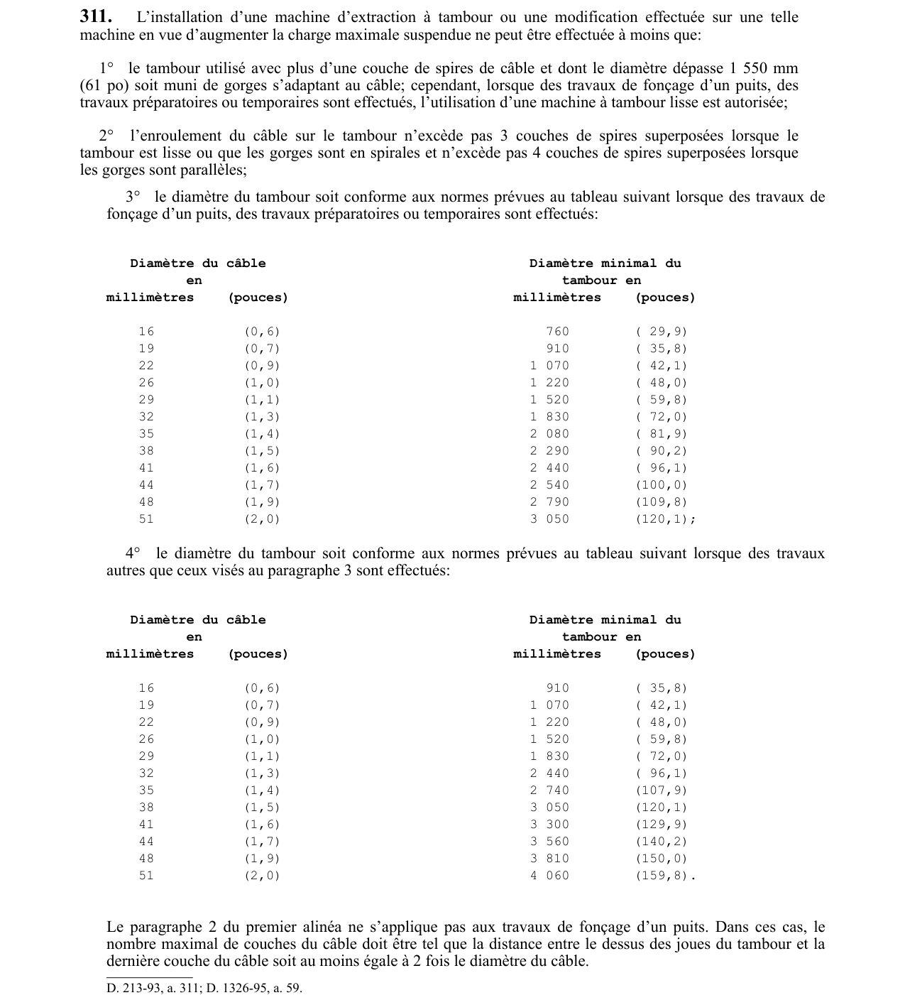

art-311-RSSM : installation machine extraction tambour modification
L’installation d’une machine d’extraction à tambour ou une modification effectuée sur une telle machine en vue d’augmenter la charge maximale suspendue ne peut être effectuée à moins que: 1° le tambour utilisé avec plus d’une couche de spires de câble et dont le diamètre dépasse 1 550 mm (61 po) soit muni de gorges s’adaptant au câble; cependant, lorsque des travaux de fonçage d’un puits, des travaux préparatoires ou temporaires sont effectués, l’utilisation d’une machine à tambour lisse est autorisée; 2° l’enroulement du câble sur le tambour n’excède pas 3 couches de spires superposées lorsque le tambour est lisse ou que les gorges sont en spirales et n’excède pas 4 couches de spires superposées lorsque les gorges sont parallèles; 3° le diamètre du tambour soit conforme aux normes prévues au tableau suivant lorsque des travaux de fonçage d’un puits, des travaux préparatoires ou temporaires sont effectués: Diamètre du câble Diamètre minimal du en tambour en millimètres (pouces) millimètres (pouces) 16 (0,6) 760 ( 29,9) 19 (0,7) 910 ( 35,8) 22 (0,9) 1 070 ( 42,1) 26 (1,0) 1 220 ( 48,0) 29 (1,1) 1 520 ( 59,8) 32 (1,3) 1 830 ( 72,0) 35 (1,4) 2 080 ( 81,9) 38 (1,5) 2 290 ( 90,2) 41 (1,6) 2 440 ( 96,1) 44 (1,7) 2 540 (100,0) 48 (1,9) 2 790 (109,8) 51 (2,0) 3 050 (120,1); 4° le diamètre du tambour soit conforme aux normes prévues au tableau suivant lorsque des travaux autres que ceux visés au paragraphe 3 sont effectués: Diamètre du câble Diamètre minimal du en tambour en millimètres (pouces) millimètres (pouces) 16 (0,6) 910 ( 35,8) 19 (0,7) 1 070 ( 42,1) 22 (0,9) 1 220 ( 48,0) 26 (1,0) 1 520 ( 59,8) 29 (1,1) 1 830 ( 72,0) 32 (1,3) 2 440 ( 96,1) 35 (1,4) 2 740 (107,9) 38 (1,5) 3 050 (120,1) 41 (1,6) 3 300 (129,9) 44 (1,7) 3 560 (140,2) 48 (1,9) 3 810 (150,0) 51 (2,0) 4 060 (159,8). Cette interdiction vise l'employeur.
- Le paragraphe 2 du premier alinéa ne s’applique pas aux travaux de fonçage d’un puits.
🌐 LegisQuébec · 📄 PDF officiel
Texte officiel : capture du PDF

Toucher l'image pour l'agrandir🔗 Voir art. 311 RSSM dans le PDF (page 84)
Version : texte officiel du RSSM (RLRQ c. S-2.1, r. 14), à jour au 1er mai 2024 — Éditeur officiel du Québec
Voir aussi
- art. 310 : câble machine extraction poulie adhérence · obligation : aucun câble d’une machine d’extraction à poulie d’adhérence ne doit glisser sur la poulie lors d’un arrêt ou d’un départ de la…
- art. 312 : diamètre poulie machine extraction adhérence · interdiction : le diamètre de la poulie d’une machine d’extraction à poulie d’adhérence ne doit pas être inférieur à 80 fois le diamètre du câble…
- ⚖️ Loi habilitante : LSST
- ↑ Index du bloc : Installations d'extraction
Pages qui pointent ici (4)
- art-310-RSSM : câble machine extraction poulie adhérence Recueil législatif
- art-312-RSSM : diamètre poulie machine extraction adhérence Recueil législatif
- art-313-RSSM : diamètre molette poulie déviation conforme Recueil législatif
- RSSM : Installations d'extraction (art. 281 à 349) Recueil législatif